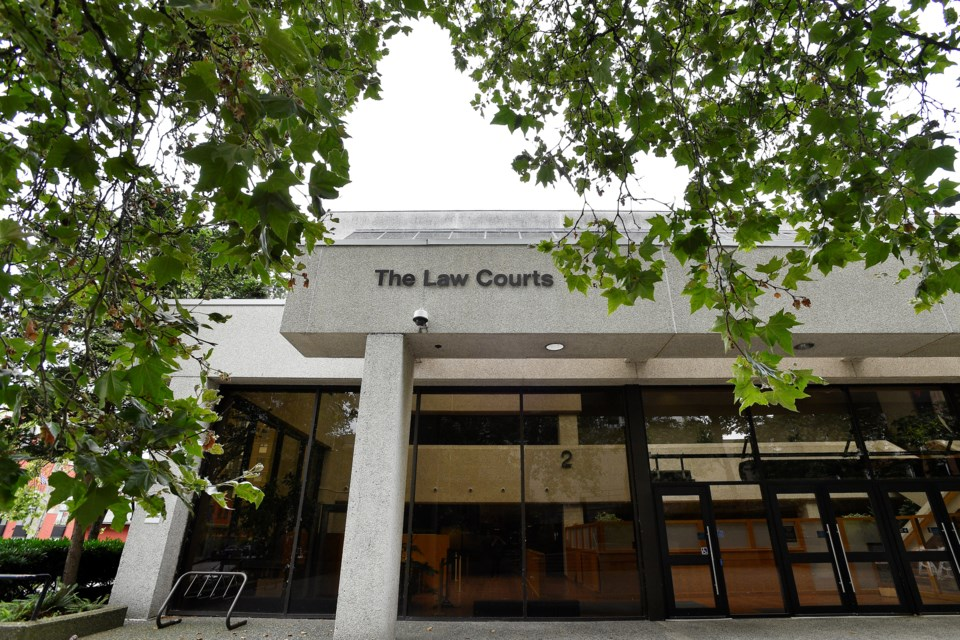

Referral and transfer
Getting your case there
Cases don't start in First Nations Court. They move there from regular court, and this page explains how that happens.
Who can raise it
Anyone close to the case can bring it up. You can ask for it yourself. Your lawyer or duty counsel can ask for you. A judge or Crown counsel can suggest it too.
Talk to your lawyer first
If you have a lawyer, start with them. They know your case and can find out if this court fits it.
If you don't have a lawyer, First Nations Court duty counsel can do the same thing for free: 604-601-6074 in Greater Vancouver, 1-877-601-6066 from anywhere else in BC. A Native Courtworker at 1-877-811-1190 or the Indigenous Community Legal Clinic at 604-822-1311 can also help you get started.
One thing to know either way: Crown counsel, the government lawyer, usually has to agree before a case moves. Your lawyer or duty counsel can raise it with the Crown.
Then comes a wait
Each court sits on set dates. Some sit every month, others every two months, so your case usually waits for the next sitting after it moves. You can find every court's schedule through the locations page.
That waiting time doesn't have to be empty. Native Courtworkers help people at the earliest possible stage of the process, so you can connect with one before your first day. Their line is 1-877-811-1190.
Your first day
Every court runs its own way, so take New Westminster as one example rather than a rule. A first appearance there is an introduction to the court.
Court sits in a circle. Introductions go around one by one, counterclockwise, starting with the judge. In the circle are the judge, Elders, Crown counsel, duty counsel, Native Courtworkers, the person appearing, and their supporters.
Before court, courtworkers often come over, talk with you, and start building a connection. Courtworkers also help with practical needs, like finding housing.
Your court may do things differently, and that's normal. Details change from location to location and from day to day.

You won't walk in cold. At New Westminster, a legal aid navigator can help you at court, and courtworker support is built into the New Westminster and Duncan courts. If you don't have your own lawyer, a duty counsel lawyer can stand with you.